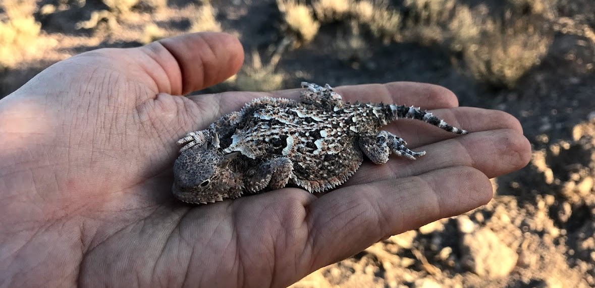

Research Experience
Graduate Thesis
Master's thesis on the spatial ecology of Gila monsters (Heloderma suspectum).
Undergraduate Thesis
Bachelor's thesis on the effects of poultry farming on stream fish diversity and richness.
REU
Research Experience for Undergraduates (REU) position studying habitat associations of songbirds in an old growth forest.
Other
Surveys and monitoring for fish and reptiles.